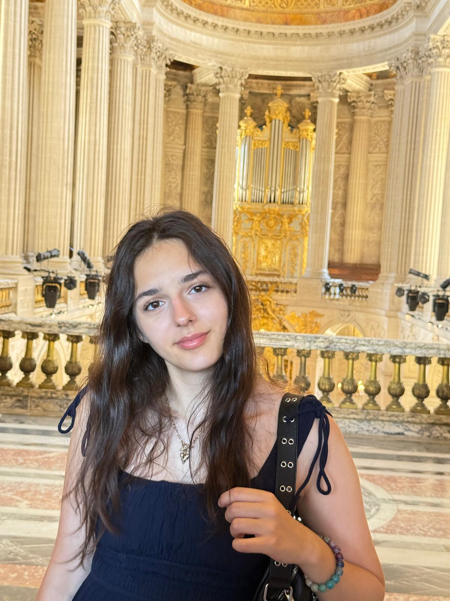

BUT WHO/
AM I?

A LITTLE ABOUT ME
Hi! My name is Sofia and I am a 12th-grade student from Romania with a lifelong fascination for the arts and the endless ways creativity can take shape.
To me, art is a language of its own, and one of the most personal ways of expressing who you are.
My artistic journey began with music. I grew up studying piano and violin at one of Romania’s renowned music schools, an experience that introduced me to years of competitions, concerts, and artistic exploration. Since then, my relationship with music has continued to evolve beyond the classroom, from performing at festivals and attending an international masterclass to creating my own arrangements of the melodies that stay with me. Whether it’s classical music, musical theatre, R&B, rock, or pop, I love finding new ways to interpret the sounds that inspire me.
But music is only one part of my creative world. I’ve always been drawn to visual art, exploring everything from charcoal, graphite, watercolours, acrylics, pastels, and alcohol markers to digital design and mixed media. My curiosity has also led me beyond the canvas, into jewellery-making, clay modelling, paper collage, and countless other forms of hands-on creation.
I’ve never wanted to limit myself to a single medium. For me, creativity lies in experimentation: in the freedom to explore, to combine different influences.
This portfolio is a collection of those explorations - a glimpse into the things that catch my attention, the ideas that move me, and the many ways I try to make sense of the world around me.